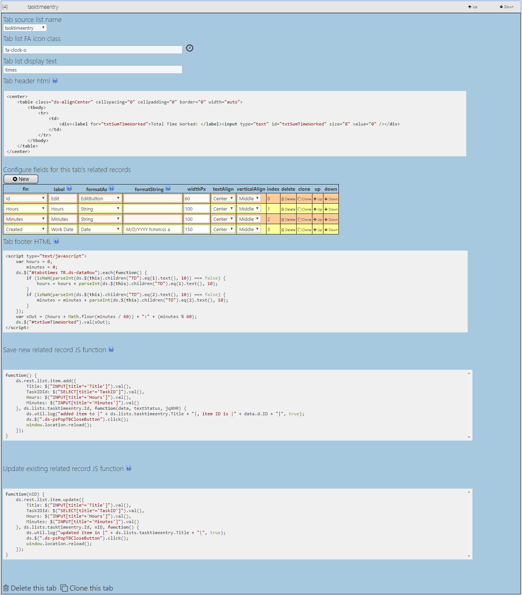

Tabs: Related Records Configuration GUI
How to configure the related records tabbed UI
How to Enter the Configuration GUI
After the Configuration GUI Has Loaded
Related Records: Master Settings
Related Records: Tab Settings

Related Records: Tab Fields Config: HTMLSnippit
Related Records: HTML Tab Config